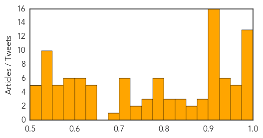

Unknown
30-Day Web Trend
15 alerts, 4 warnings

30-Day Twitter Trend
7 alerts, 1 warnings

Article Locations

Article Confidences
Top Articles:
- 0.999
- SoKor Reports 4 New MERS Cases, Outruns KSA On Outbreak Progress
- 0.998
- S. Korea medical facilities stop healthcare to curb MERS spread - Regional
- 0.998
- SKorea says MERS outbreak at crossroads
- 0.997
- South Korea’s Fight With MERS Outbreak
- 0.996
- SK says outbreak at crossroads
- 0.995
- Two more die of MERS, including caregiver
- 0.992
- South Korea hospitals to monitor emergency room visitors in battle on Mers, Government & Economy
- 0.989
- S.Korea hospitals to monitor emergency room visitors in battle on MERS
- 0.989
- Virus Mutation Explains Poor Performance of Last Season's Flu Shot
- 0.987
- S Korea hospitals to monitor emergency room visitors in battle on MERS
- 0.986
- S Korea hospitals to track emergency room visitors in battle..
- 0.981
- South Korea's MERS deaths reach 23 — World News
- 0.977
- Meningococcal case sparks warning
- 0.966
- Stimulus package to boost MERS-hit South Korean economy
- 0.964
- Flu Vaccine Was Highly Ineffective This Year Because Of Key Virus Mutations, Study Finds
- 0.963
- South Korea hospitals told to monitor emergency room visitors in battle on MERS
- 0.962
- Fatality rate up to 16%
- 0.956
- Greater Jakarta: Test declares child free of MERS
- 0.947
- Testing proves Jakarta toddler suspected of having MERS is NOT infected
- 0.946
- Test declares child free of MERS in Jakarta, news, Health News, AsiaOne YourHealth
- 0.944
- MERS Outbreak: Samsung Hospital Offers Apology as South Korea Gears up with $9 Billion
- 0.943
- Officials check Bangkok hospitals' readiness to treat MERS cases
- 0.934
- Isolated parking at Don Mueang for flights from South Korea provided as precaution
- 0.933
- Health ministry in South Korea to monitor emergency ward visitors
- 0.917
- Chicago Tribune
- 0.917
- Chicago Tribune
- 0.917
- Chicago Tribune
- 0.917
- Chicago Tribune
- 0.917
- Chicago Tribune
- 0.917
- Chicago Tribune
- 0.917
- Chicago Tribune
- 0.917
- Chicago Tribune
- 0.917
- Chicago Tribune
- 0.917
- Chicago Tribune
- 0.917
- Chicago Tribune
- 0.917
- Chicago Tribune
- 0.917
- Chicago Tribune
- 0.917
- Chicago Tribune
- 0.917
- Chicago Tribune
- 0.917
- Chicago Tribune
- 0.898
- KBS World Radio
- 0.892
- Pig farmers warned of imminent threat of African swine fever to Germany
- 0.884
- Economic Concerns Grow in S. Korea as MERS Death Toll Rises
- 0.865
- Student games and Mers virus
- 0.851
- Pet Talk: Chagas Disease in Dogs
- 0.841
- British woman in Hua Hin in quarantine for MERS
- 0.834
- Korea releases names of six additional health-care facilities affected by MERS
- 0.833
- Florida health officials trying to ease fears over coastal bacteria
- 0.820
- Yala Hospital ready to prevent MERS outbreak when Muslim pilgrims return from Saudi Arabia
- 0.819
- Pakistan: Deaths 1,200 as Karachi wilts under heat
Showing top 50 articles...
Top Tweets:
- 0.760
- Antibiotics are not a treatment for cold or flu! Protect yourself against the flu and get a flushotnow http://t.co/lSTQOupDEo
- 0.625
- ISG experts warn of severe flu season - Health & Wellbeing: http://t.co/cd52ivMrKo flushotnow
- 0.574
- Saudi Arabia announces another MERS case at Hufof. Believe that outbreak now totals 39 cases, 21 deaths. http://t.co/AuGm1Z6WWU
- 0.521
- Health system braces for bad flu season https://t.co/8GpOOX61GV via flushotnow
Ebola
30-Day Web Trend
0 alerts, 0 warnings

30-Day Twitter Trend
0 alerts, 0 warnings

Article Locations

Article Confidences

Top Articles:
- 1.000
- Ebola setback for Sierra Leone as new cases recorded
- 1.000
- Insulating Nigeria from MERS, Articles
- 1.000
- Ebola Returns to Sierra Leone’s Freetown, Articles
- 1.000
- Ebola-hit Sierra Leone quarantines 31 health workers
- 1.000
- Ebola cases not slowing in Guinea, Sierra Leone
- 1.000
- Ebola setback for Sierra Leone as capital records new cases
- 1.000
- Ebola cases not slowing in Guinea, Sierra Leone
- 1.000
- Ebola cases not slowing in Guinea, Sierra Leone
- 1.000
- Sierra Leone's Ebola outbreak dash hopes for epidemic's endMedCity News
- 0.999
- No plan to close borders
- 0.999
- Ebola setback for Sierra Leone as capital records new cases
- 0.999
- Guinea malaria toll believed spiked as sufferers shunned hospitals amid Ebola menace
- 0.999
- Ebola setback for Sierra Leone as capital records new cases
- 0.999
- State health officials issue MERS alert to physicians
- 0.999
- Ebola-hit Sierra Leone quarantines 31 health workers
- 0.999
- Ebola-hit Sierra Leone quarantines 31 health workers
- 0.998
- Tolbert Nyenswah Is Wrong: Shut The Damn Border Down
- 0.997
- Ebola-hit Sierra Leone quarantines 31 health workers
- 0.997
- DOCTOR IN NEW YORK CITY TESTS POSITIVE FOR EBOLA — United States
- 0.996
- Guinea quarantines villages in reinforced bid to stamp out Ebola
- 0.996
- Three Ebola virus variants identified in Guinea
- 0.996
- Three Ebola virus variants identified in Guinea
- 0.995
- 20 days after… Freetown records new cases « Awoko Newspaper
- 0.990
- Ebola setback for Sierra Leone as capital records new cases
- 0.988
- UNMEER SRSG Peter Graaff on visit to Guinea-Bissau - Guinea-Bissau
- 0.985
- Online News and Information Portal for Ghanaians In Diaspora
- 0.983
- Guinea-Bissau: UNMEER SRSG Peter Graaff on visit to Guinea-Bissau
- 0.980
- Leaders Praised For Ebola Response
- 0.956
- News in the Humanosphere: Fresh Ebola outbreak in Sierra Leone
- 0.932
- ‘Meet the Most Powerful Doctor in America’
- 0.926
- Olivia Wilde spotlights ripple effects of Ebola crisis
- 0.919
- Nimba Unveils Ebola Monument
- 0.910
- China plays active role in combating emerging global infectious diseases
- 0.903
- One of Sierra Leone's toughest slums beats Ebola - Sierra Leone
- 0.896
- Sierra Leone Poised to Lift Bar on Pregnant Girls Being Educated
- 0.895
- China plays active role in combating emerging global infectious diseases: Vice Premier[1]- Chinadaily.com.cn
- 0.883
- China, US increase teamwork in Ebola fight
- 0.813
- Geovax Labs : AFRICAN LEADERSHIP MAGAZINE to Present Two Prestigious Awards to GeoVax and Dr. Robert McNally
- 0.783
- Three Things to Do to Fight Ebola Recurrence
- 0.780
- Are There Some Positive Lessons From the Ebola Crisis?
- 0.751
- AFRICAN LEADERSHIP MAGAZINE to Present Two Prestigious Awards to GeoVax and Dr. Robert McNally
- 0.727
- Brought low by a virus-INSIDE Korea JoongAng Daily
- 0.691
- Ganta Ebola Monument Center dedicated
- 0.639
- Sierra Leone poised to lift bar on pregnant girls being educated
- 0.559
- Hombre gana 500.000 dólares luego de que doctores se burlaran de el en cirugía
- 0.529
- New UN Goals Lack Focus, Global Health Experts Warn
Top Tweets:
- 0.991
- Ebola-hit Sierra Leone quarantines 31 health workers - Yahoo News http://t.co/mY3lvTgwhu ebola EVD
- 0.969
- Fingerprick test quickly diagnoses Ebola - Science /AAAS http://t.co/MAfkfN0xh3 ebola EVD
- 0.947
- Ebola crisis 'harming malaria fight' - Citifmonline http://t.co/KK4trIeceq ebola EVD
- 0.915
- New: Effect of the Ebola-virus-disease epidemic on malaria case management in Guinea, 2014 http://t.co/MfruexpL2R
- 0.887
- Ebola Is Far From Over In Guinea And Sierra Leone - Huffington Post http://t.co/50kWHXGlZ2 ebola EVD
- 0.884
- Distinct lineages of Ebola virus in Guinea during the 2014 West African epidemic http://t.co/8NPhcEPyjn
- 0.850
- Rising number of malaria deaths likely to exceed total number of Ebola deaths - http://t.co/A9wAAOLz1c http://t.co/qiFhUBrRPk ebola EVD
- 0.748
- Team gets new close-up view of key part of Ebola virus life cycle - http://t.co/5WU5I4RBHY http://t.co/eStiP9rm3z ebola EVD
- 0.720
- Ebola cases reported in Guinea as people travel, worries increase with elections on horizon http://t.co/cusIXlGvnw
- 0.716
- Rising number of malaria deaths likely to exceed total number of Ebola deaths http://t.co/iwipVbD089
- 0.644
- UN envoy on Ebola travels to Guinea Bissau after new cases reported in ... - UN News Centre http://t.co/hSB2O6zALv
- 0.634
- SierraLeone. Ebola setback Leone as new cases recorded http://t.co/z7yPLLdv4G
- 0.629
- 24 June - news pouch on avianflu avianinfluenza Ebola EbolaResponse MERS is here: http://t.co/WOqFuoGjaa
- 0.588
- Beating Ebola Like a Detective: Liberia's Lessons for Sierra Leone and Guinea, from http://t.co/QWsyinqt2u
- 0.569
- Guinea, Liberia and Sierra Leone - Food Insecurity on the Rise as Ebola Abates, June 2015:... http://t.co/zTFNCCHFpc
- 0.568
- GUINEE. Le paludisme a plus tué que le virus Ebola http://t.co/OW1zEbJCcZ via
- 0.537
- Liberia: Staying at zero Ebola transmission http://t.co/1i8VBSYbEp
- 0.525
- UN Ebola Chief travels to GuineaBissau after new cases reported in bordering Guinea https://t.co/WFq28eBM9M http://t.co/07pydhFkYL